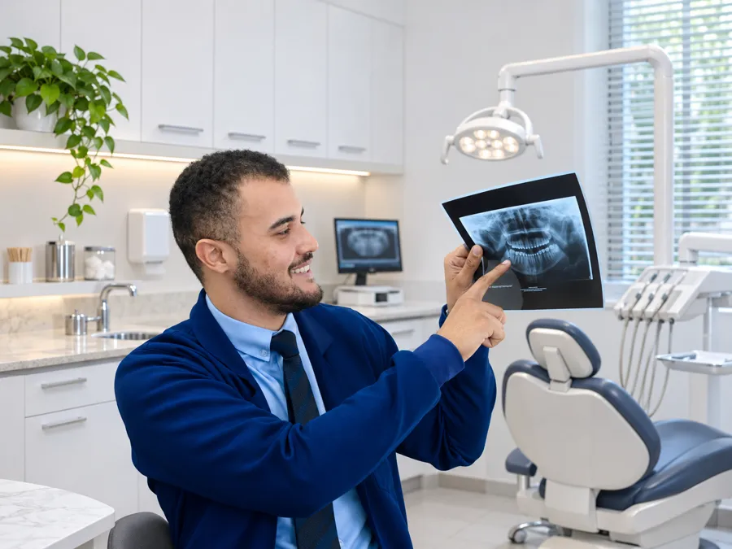

Cirurgia de sisos
Sisos inclusos, semi-inclusos e tortos, os que ficaram presos no osso ou encostam na raiz do dente vizinho ou no nervo.
Para quem sente dor ou inchaço que volta na parte de trás da boca, ou foi encaminhado pelo ortodontista. Nem todo siso precisa sair, e isso é dito com clareza na avaliação.